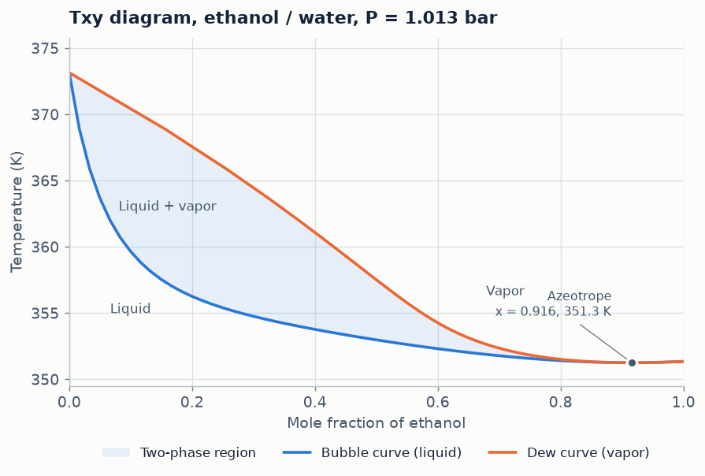
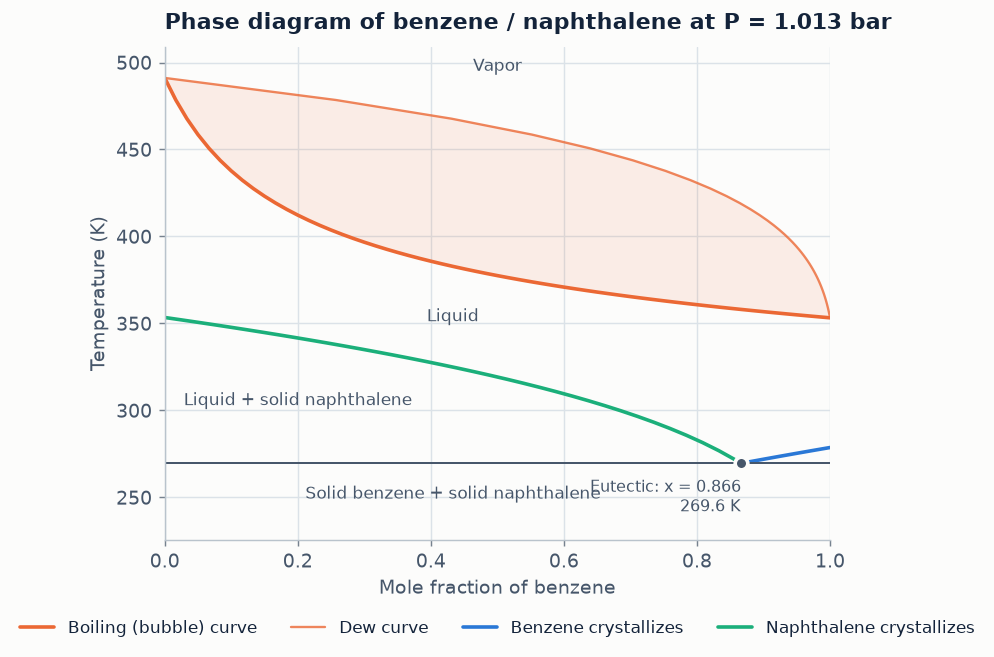
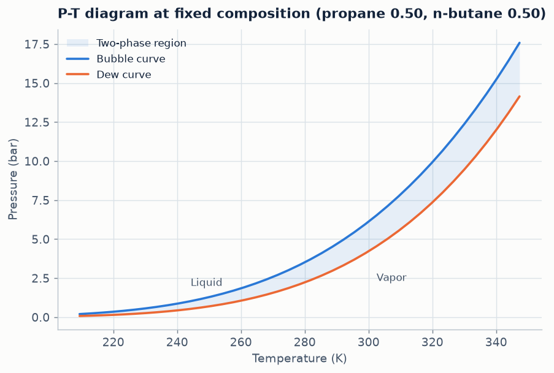
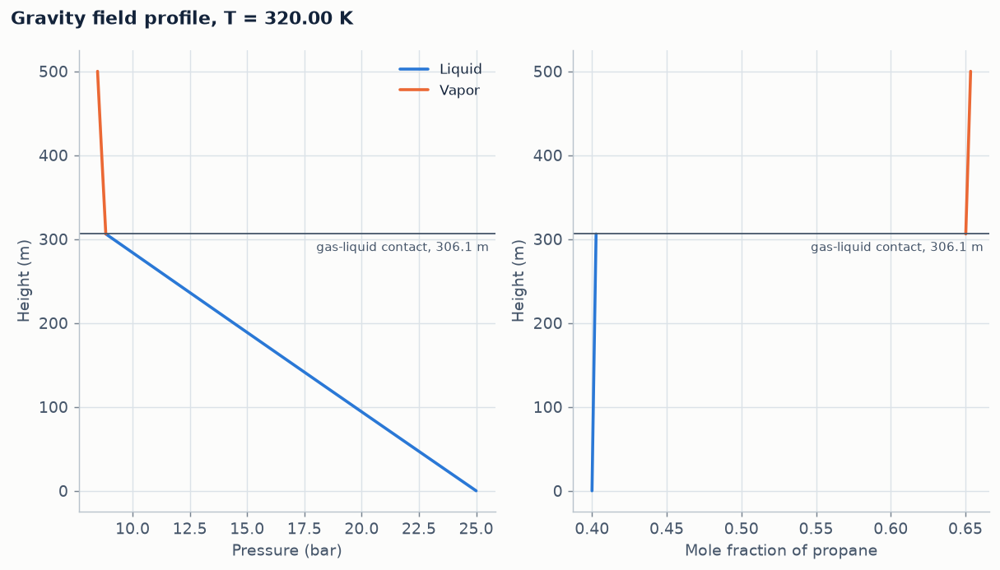

On this page
Two equations of state
examples/propane_butane_pr_pxy.txt gives four constants per compound and asks for a Pxy diagram at 300 K with Peng–Robinson. At \(x_{\text{propane}} = 0.4\) the bubble pressure is bar, and the first vapor contains propane.
The ends of the diagram are the vapor pressures of the pure compounds, so the two equations can be compared on pure propane:
| Equation | Vapor pressure of propane at 300 K (bar) |
|---|---|
| van der Waals | |
| Peng–Robinson | |
| Measured (NIST) | ≈ 9.98 |
van der Waals, with no acentric factor and a constant \(a\), is far off. Peng–Robinson tunes \(a(T)\) to vapor-pressure behavior with the acentric factor and lands within about 1%.
A complete phase diagram from latent heats
examples/benzene_naphthalene.txt contains no critical constants and no vapor-pressure equation, only boiling points, melting points and the two latent heats of each compound:
components = benzene, naphthalene
P = 1 atm
sweep = x
benzene.Tb = 353.24 K
benzene.dHvap = 30.72 kJ/mol
benzene.Tm = 278.68 K
benzene.dHfus = 9.87 kJ/mol
naphthalene.Tb = 491.14 K
naphthalene.dHvap = 43.2 kJ/mol
naphthalene.Tm = 353.43 K
naphthalene.dHfus = 19.01 kJ/molThe checker finds three equilibria it can calculate from this: boiling, benzene crystallizing and naphthalene crystallizing. The solver adds the eutectic where both solids form together: K at \(x_{\text{benzene}}\) = , close to the measured value of about 270 K.
An azeotrope from two parameters
examples/ethanol_water_vanlaar.txt types the two vapor pressures as formulas and adds a van Laar model with \(A_{12} = 1.68\) and \(A_{21} = 0.92\). The solver finds the azeotrope at \(x_{\text{ethanol}}\) = and K. The measured one is at about 0.894 and 351.3 K.
Using the database from an input file
One line, database = builtin, fills in every property the file does not give. examples/database_pt_diagram.txt is the whole input for a P–T diagram of an equimolar propane–n-butane mixture with Peng–Robinson:
components = propane, n-butane
database = builtin
model = PR
x(L) = 0.5
sweep = TThe database supplies \(T_c\), \(P_c\), \(\omega\), the molar masses and \(k_{12}\). Anything written in the file overrides it, so a single value can be replaced without retyping the rest.
A 500 m column in gravity
examples/gravity_column_gas_cap.txt puts a liquid with \(z_{\text{propane}} = 0.4\) at 320 K and 25 bar at the bottom of a 500 m column. Going up, the pressure falls. At m it reaches the local bubble pressure ( bar) and a gas cap forms above.
The solver never uses the hydrostatic equation \(dP = -\rho g\,dz\). It only requires \(\ln\hat f_i + M_i g z/RT\) to be constant, and the pressure profile that comes out satisfies the hydrostatic equation to about \(10^{-7}\) bar.
A centrifuge
examples/ethanol_water_centrifuge.txt spins an ethanol–water liquid at 20,000 rpm. At the inner radius, 0.05 m, the liquid is at its bubble point (\(x_{\text{ethanol}} = 0.5\), 350 K, bar) in contact with its vapor. It fills the rotor out to 0.10 m.
| Radius (m) | Pressure (bar) | \(x_{\text{ethanol}}\) |
|---|
At the wall the liquid is at about bar and slightly depleted in ethanol, the lighter compound. The vapor–liquid diagram at any one radius is the ordinary one: the field changes where each state is found, not the equilibrium between phases that touch.
Plots from the Python program
plotter.py solves an input file and saves every figure its results contain:
python plotter.py examples/ethanol_water_vanlaar.txt






